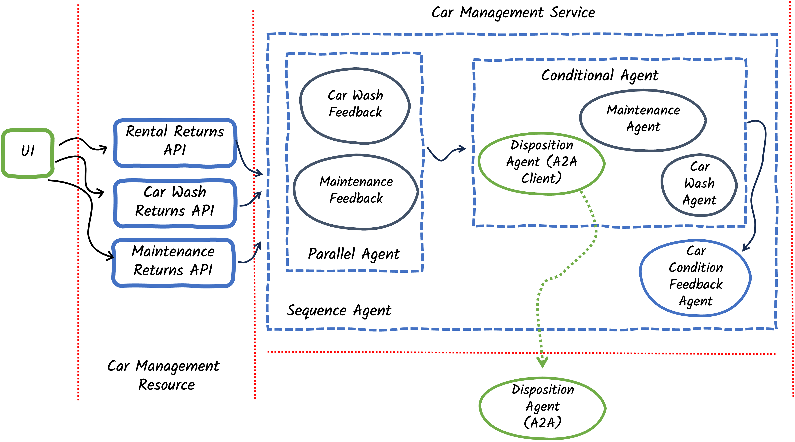

Step 04 - Using Remote Agents (A2A)
New Requirement: Car Disposal Decisions
The Miles of Smiles management team has yet another new challenge: they need to decide what to do with cars that are beyond economical repair.
When cars are returned with severe damage or major mechanical issues, the company needs to:
- Analyze if disposal is needed: determine if repair costs exceed the car’s value
- Consult a specialized disposition expert: a remote AI agent that makes disposal recommendations
- Execute the disposal decision: scrap, sell, or donate the car
The disposition expert is maintained by a separate (remote) team and runs in its own system. You’ll learn how to integrate it using the Agent-to-Agent (A2A) protocol.
What You’ll Learn
In this step, you will:
- Understand the Agent-to-Agent (A2A) protocol for distributed agent communication
- Build a client agent that connects to remote A2A agents using
@A2AClientAgent - Create an A2A server that exposes an AI agent as a remote service
- Learn about AgentCard, AgentExecutor, and TaskUpdater components from the A2A SDK
- Understand the difference between Tasks and Messages in A2A protocol
- Run multiple Quarkus applications that communicate via A2A
- Integrate remote agents into existing workflows
Note
At the moment the A2A integration is quite low-level and requires some boilerplate code. The Quarkus LangChain4j team is working on higher-level abstractions to simplify A2A usage in future releases.
Understanding the A2A Protocol
The Agent-to-Agent (A2A) protocol is an open standard for AI agents to communicate across different systems and platforms.
Why A2A?
- Separation of concerns: Different teams can develop specialized agents independently
- Scalability: Distribute agent workload across multiple systems
- Reusability: One agent can serve multiple client applications
- Technology independence: Agents can be implemented in different languages/frameworks
A2A Architecture
graph LR
subgraph "Quarkus Runtime 1: Car Management System"
W[CarProcessingWorkflow]
DA["DispositionAgent<br/>@A2AClientAgent"]
W --> DA
end
subgraph "A2A Protocol Layer"
AP[JSON-RPC over HTTP]
end
subgraph "Quarkus Runtime 2: Disposition Service"
AC[AgentCard<br/>Agent Metadata]
AE[AgentExecutor<br/>Request Handler]
AI[DispositionAgent<br/>AI Service]
T[DispositionTool]
AC -.describes.-> AI
AE --> AI
AI --> T
end
DA -->|A2A Request| AP
AP -->|A2A Response| DA
AP <-->|JSON-RPC| AE
The Flow:
- Client agent (
DispositionAgentwith@A2AClientAgent) sends a request to the remote agent - A2A Protocol Layer (JSON-RPC) transports the request over HTTP
- AgentCard describes the remote agent’s capabilities (skills, inputs, outputs)
- AgentExecutor receives the request and orchestrates the execution
- Remote AI agent (DispositionAgent AI service) processes the request using tools
- Response flows back through the same path
Understanding Tasks vs. Messages
The A2A protocol distinguishes between two types of interactions:
| Concept | Description | Use Case |
|---|---|---|
| Task | A long-running job with a defined goal and tracked state | “Determine if this car should be scrapped” |
| Message | A single conversational exchange with no tracked state | Chat messages, quick questions |
In this step, we’ll use Tasks because car disposition analysis is a discrete job with a clear objective.
Task Lifecycle:
sequenceDiagram
participant Client as Client Agent
participant Server as A2A Server
participant Executor as AgentExecutor
participant AI as AI Agent
Client->>Server: Create Task (POST /tasks)
Server->>Executor: Initialize TaskUpdater
Executor->>AI: Execute with input
AI->>AI: Process and use tools
AI->>Executor: Return result
Executor->>Server: Update task status
Server->>Client: Task resultWhat Are We Going to Build?

We’ll extend the car management system with:
- DispositionFeedbackAgent: Analyzes if a car should be disposed (scrap/sell/donate)
- DispositionAgent (Client): Connects to the remote disposition expert via A2A
- Remote A2A Server: A separate Quarkus application exposing the disposition expert
- Disposition Workflow: Integrates disposition analysis into the car processing flow
The Complete Architecture:
graph TD
subgraph "Main Application (localhost:8080)"
R[Rental/CarWash/Maintenance Returns]
FW[FeedbackWorkflow<br/>Parallel]
DFA[DispositionFeedbackAgent]
AW[ActionWorkflow<br/>Conditional]
DAC["DispositionAgent<br/>@A2AClientAgent"]
R --> FW
FW --> DFA
DFA --> AW
AW --> DAC
end
subgraph "Remote Disposition Service (localhost:8888)"
AC[AgentCard]
AE[AgentExecutor]
DAI[DispositionAgent<br/>AI Service]
DT[DispositionTool]
AE --> DAI
DAI --> DT
end
DAC -->|A2A Protocol| AE
Prerequisites
Before starting:
- Completed Step 03 (or have the
section-2/step-03code available) - Application from Step 03 is stopped (Ctrl+C)
- Ports 8080 and 8888 are available (you’ll run two applications simultaneously)
Understanding the Project Structure
The Step 04 code includes two separate Quarkus applications:
section-2/step-04/
├── multi-agent-system/ # Main car management application (port 8080)
│ ├── src/main/java/com/carmanagement/
│ │ ├── agentic/
│ │ │ ├── agents/
│ │ │ │ ├── DispositionAgent.java # A2A client agent
│ │ │ │ └── DispositionFeedbackAgent.java # Analyzes disposal needs
│ │ │ └── workflow/
│ │ │ ├── FeedbackWorkflow.java # Parallel analysis
│ │ │ ├── ActionWorkflow.java # Conditional routing
│ │ │ └── CarProcessingWorkflow.java # Main orchestrator
│ └── pom.xml
│
└── remote-a2a-agent/ # Remote disposition service (port 8888)
├── src/main/java/com/demo/
│ ├── DispositionAgentCard.java # Describes agent capabilities
│ ├── DispositionAgentExecutor.java # Handles A2A requests
│ ├── DispositionAgent.java # AI service
│ └── DispositionTool.java # Tool for scrap/sell/donate
└── pom.xml
Why Two Applications?
- Simulates a real-world scenario where different teams maintain different agents
- The disposition service could be reused by multiple client applications
- Demonstrates cross-application agent communication via A2A
Option 1: Continue from Step 03
If you want to continue building on your Step 03 code, copy the updated files:
cd section-2/step-03
cp ../step-04/multi-agent-system/pom.xml ./pom.xml
cp ../step-04/multi-agent-system/src/main/java/com/carmanagement/model/CarInfo.java ./src/main/java/com/carmanagement/model/CarInfo.java
cp ../step-04/multi-agent-system/src/main/java/com/carmanagement/model/CarStatus.java ./src/main/java/com/carmanagement/model/CarStatus.java
cp ../step-04/multi-agent-system/src/main/resources/static/css/styles.css ./src/main/resources/static/css/styles.css
cp ../step-04/multi-agent-system/src/main/resources/static/js/app.js ./src/main/resources/static/js/app.js
cp ../step-04/multi-agent-system/src/main/resources/templates/index.html ./src/main/resources/templates/index.html
cp ../step-04/multi-agent-system/src/main/resources/import.sql ./src/main/resources/import.sql
cd section-2\step-03
copy ..\step-04\multi-agent-system\pom.xml .\pom.xml
copy ..\step-04\multi-agent-system\src\main\java\com\carmanagement\model\CarInfo.java .\src\main\java\com\carmanagement\model\CarInfo.java
copy ..\step-04\multi-agent-system\src\main\java\com\carmanagement\model\CarStatus.java .\src\main\java\com\carmanagement\model\CarStatus.java
copy ..\step-04\multi-agent-system\src\main\resources\static\css\styles.css .\src\main\resources\static\css\styles.css
copy ..\step-04\multi-agent-system\src\main\resources\static\js\app.js .\src\main\resources\static\js\app.js
copy ..\step-04\multi-agent-system\src\main\resources\templates\index.html .\src\main\resources\templates\index.html
copy ..\step-04\multi-agent-system\src\main\resources\import.sql .\src\main\resources\import.sql
Option 2: Start Fresh from Step 04
Navigate to the complete section-2/step-04/multi-agent-system directory:
Part 1: Build the Client-Side Components
Step 1: Create the DispositionFeedbackAgent
This agent analyzes feedback to determine if a car should be disposed.
In src/main/java/com/carmanagement/agentic/agents, create DispositionFeedbackAgent.java:
package com.carmanagement.agentic.agents;
import dev.langchain4j.service.SystemMessage;
import dev.langchain4j.service.UserMessage;
import dev.langchain4j.agentic.Agent;
/**
* Agent that analyzes feedback to determine if a car should be disposed of.
*/
public interface DispositionFeedbackAgent {
@SystemMessage("""
You are a car disposition analyzer for a car rental company. Your job is to determine if a car should be disposed of based on feedback.
Analyze the maintenance feedback and car information to decide if the car should be scrapped, sold, or donated.
If the car is in decent shape, respond with "DISPOSITION_NOT_REQUIRED".
Include the reason for your choice but keep your response short.
""")
@UserMessage("""
Car Information:
Make: {carMake}
Model: {carModel}
Year: {carYear}
Previous Condition: {carCondition}
Feedback:
Rental Feedback: {rentalFeedback}
Car Wash Feedback: {carWashFeedback}
Maintenance Feedback: {maintenanceFeedback}
""")
@Agent(outputName="dispositionRequest", description="Car disposition analyzer. Using feedback, determines if a car should be disposed of.")
String analyzeForDisposition(
String carMake,
String carModel,
Integer carYear,
Long carNumber,
String carCondition,
String rentalFeedback,
String carWashFeedback,
String maintenanceFeedback);
}
Key Points:
- System message: Focuses on economic viability (is the car worth repairing?)
- Specific output format: Returns
"DISPOSITION_NOT_REQUIRED"when the car is repairable - outputName:
"dispositionRequest"(stores the analysis in AgenticScope’s state) - Three feedback sources: Analyzes rental, car wash, and maintenance feedback
Decision Criteria:
The agent considers: - Severity of damage (structural, engine, transmission) - Repair costs vs. car value - Age and condition of the vehicle - Safety concerns
Step 2: Create the DispositionAgent (Client)
This is where the A2A magic happens! This agent connects to the remote disposition agent.
In src/main/java/com/carmanagement/agentic/agents, create DispositionAgent.java:
package com.carmanagement.agentic.agents;
import dev.langchain4j.agentic.declarative.A2AClientAgent;
/**
* Agent that determines how to dispose of a car.
*/
public interface DispositionAgent {
@A2AClientAgent(a2aServerUrl = "http://localhost:8888",
outputName="dispositionAgentResult",
description="Car disposition specialist. Determines how to dispose of a car."
)
String processDisposition(
String carMake,
String carModel,
Integer carYear,
Long carNumber,
String carCondition,
String dispositionRequest);
}
Let’s break it down:
@A2AClientAgent Annotation
@A2AClientAgent(
a2aServerUrl = "http://localhost:8888",
outputName = "dispositionAgentResult",
description = "Car disposition specialist. Recommends how to dispose of a car (scrap, sell, donate)."
)
This annotation transforms the method into an A2A client:
a2aServerUrl: The URL of the remote A2A serveroutputName: Where to store the result in AgenticScope’s statedescription: Describes the agent’s purpose (helps with agent discovery)
The Method Signature
String processDisposition(
String carMake,
String carModel,
Integer carYear,
Long carNumber,
String carCondition,
String dispositionRequest
)
These parameters are sent to the remote agent as task inputs. The remote agent can access them by name.
How It Works
- When this method is called, Quarkus LangChain4j:
- Creates an A2A Task with the method parameters as inputs
- Sends the task to the remote server via JSON-RPC
- Waits for the remote agent to complete the task
-
Returns the result as a String
-
No manual HTTP requests needed
- Type-safe: compile-time checking of parameters
- Automatic error handling and retries
Part 2: Update the Workflows
Step 3: Update FeedbackWorkflow
The FeedbackWorkflow needs to include the new disposition analysis.
Update src/main/java/com/carmanagement/agentic/workflow/FeedbackWorkflow.java:
package com.carmanagement.agentic.workflow;
import com.carmanagement.agentic.agents.CarWashFeedbackAgent;
import com.carmanagement.agentic.agents.DispositionFeedbackAgent;
import com.carmanagement.agentic.agents.MaintenanceFeedbackAgent;
import dev.langchain4j.agentic.Agent;
import dev.langchain4j.agentic.declarative.ParallelAgent;
import dev.langchain4j.agentic.declarative.SubAgent;
/**
* Workflow for processing car feedback in parallel.
*/
public interface FeedbackWorkflow {
/**
* Runs multiple feedback agents in parallel to analyze different aspects of car feedback.
*/
@Agent(outputName = "feedbackResult")
@ParallelAgent(outputName = "feedbackResult", subAgents = {
@SubAgent(type = CarWashFeedbackAgent.class, outputName = "carWashRequest"),
@SubAgent(type = MaintenanceFeedbackAgent.class, outputName = "maintenanceRequest"),
@SubAgent(type = DispositionFeedbackAgent.class, outputName = "dispositionRequest")
})
String analyzeFeedback(
String carMake,
String carModel,
Integer carYear,
Long carNumber,
String carCondition,
String rentalFeedback,
String carWashFeedback,
String maintenanceFeedback);
}
Key changes:
Added DispositionFeedbackAgent to the parallel workflow:
Now three agents run concurrently:
- CarWashFeedbackAgent — analyzes cleaning needs
- MaintenanceFeedbackAgent — analyzes maintenance needs
- DispositionFeedbackAgent — analyzes disposal needs
This parallel execution is efficient: all three analyses happen at the same time!
Step 4: Update ActionWorkflow
The ActionWorkflow needs to handle disposition requests.
Update src/main/java/com/carmanagement/agentic/workflow/ActionWorkflow.java:
package com.carmanagement.agentic.workflow;
import com.carmanagement.agentic.agents.CarWashAgent;
import com.carmanagement.agentic.agents.DispositionAgent;
import com.carmanagement.agentic.agents.MaintenanceAgent;
import dev.langchain4j.agentic.declarative.ActivationCondition;
import dev.langchain4j.agentic.declarative.ConditionalAgent;
import dev.langchain4j.agentic.declarative.SubAgent;
/**
* Workflow for processing car actions conditionally.
*/
public interface ActionWorkflow {
/**
* Runs the appropriate action agent based on the feedback analysis.
*/
@ConditionalAgent(outputName = "actionResult", subAgents = {
@SubAgent(type = MaintenanceAgent.class, outputName = "actionResult"),
@SubAgent(type = CarWashAgent.class, outputName = "actionResult"),
@SubAgent(type = DispositionAgent.class, outputName = "actionResult")
})
String processAction(
String carMake,
String carModel,
Integer carYear,
Long carNumber,
String carCondition,
String carWashRequest,
String maintenanceRequest,
String dispositionRequest);
@ActivationCondition(MaintenanceAgent.class)
static boolean activateMaintenance(String maintenanceRequest) {
return isRequired(maintenanceRequest);
}
@ActivationCondition(CarWashAgent.class)
static boolean activateCarWash(String carWashRequest) {
return isRequired(carWashRequest);
}
@ActivationCondition(DispositionAgent.class)
static boolean activateDisposition(String dispositionRequest) {
return isRequired(dispositionRequest);
}
private static boolean isRequired(String value) {
return value != null && !value.isEmpty() && !value.toUpperCase().contains("NOT_REQUIRED");
}
}
Key changes:
Added DispositionAgent to SubAgents
Added Activation Condition
@ActivationCondition(DispositionAgent.class)
static boolean activateDisposition(String dispositionRequest) {
return isRequired(dispositionRequest);
}
Updated Execution Priority
The conditional workflow now has priority ordering:
- Disposition (highest priority) — if disposal is needed
- Maintenance — if maintenance is needed and disposal isn’t
- Car Wash — if washing is needed and neither disposal nor maintenance is
- Skip — if nothing is needed
This ensures critical issues (disposal) are handled before routine tasks (washing).
Step 5: Update CarConditionFeedbackAgent
The CarConditionFeedbackAgent should consider disposition feedback.
Update src/main/java/com/carmanagement/agentic/agents/CarConditionFeedbackAgent.java:
package com.carmanagement.agentic.agents;
import dev.langchain4j.agentic.Agent;
import dev.langchain4j.service.SystemMessage;
import dev.langchain4j.service.UserMessage;
/**
* Agent that analyzes feedback to update the car condition.
*/
public interface CarConditionFeedbackAgent {
@SystemMessage("""
You are a car condition analyzer for a car rental company. Your job is to determine the current condition of a car based on feedback.
Analyze all feedback and the previous car condition to provide an updated condition description.
Always provide a concise condition description, even if there's minimal feedback.
Do not add any headers or prefixes to your response.
""")
// --8<-- [start:carConditionFeedbackSnippet]
@UserMessage("""
Car Information:
Make: {carMake}
Model: {carModel}
Year: {carYear}
Previous Condition: {carCondition}
Feedback from other agents:
Car Wash Recommendation: {carWashRequest}
Maintenance Recommendation: {maintenanceRequest}
""")
@Agent(description = "Car condition analyzer. Determines the current condition of a car based on feedback.",
outputName = "carCondition")
String analyzeForCondition(
String carMake,
String carModel,
Integer carYear,
Long carNumber,
String carCondition,
String carWashRequest,
String maintenanceRequest);
// --8<-- [end:carConditionFeedbackSnippet]
}
Key changes:
Now takes dispositionRequest as input to provide more comprehensive condition assessments.
Step 6: Update CarProcessingWorkflow
Update the output method to handle disposition:
Update src/main/java/com/carmanagement/agentic/workflow/CarProcessingWorkflow.java:
package com.carmanagement.agentic.workflow;
import com.carmanagement.agentic.agents.CarConditionFeedbackAgent;
import com.carmanagement.model.CarConditions;
import com.carmanagement.model.RequiredAction;
import dev.langchain4j.agentic.declarative.Output;
import dev.langchain4j.agentic.declarative.SequenceAgent;
import dev.langchain4j.agentic.declarative.SubAgent;
/**
* Workflow for processing car returns using a sequence of agents.
*/
public interface CarProcessingWorkflow {
/**
* Processes a car return by running feedback analysis and then appropriate actions.
*/
@SequenceAgent(outputName = "carProcessingAgentResult", subAgents = {
@SubAgent(type = FeedbackWorkflow.class, outputName = "carProcessingAgentResult"),
@SubAgent(type = ActionWorkflow.class, outputName = "carProcessingAgentResult"),
@SubAgent(type = CarConditionFeedbackAgent.class, outputName = "carProcessingAgentResult")
})
CarConditions processCarReturn(
String carMake,
String carModel,
Integer carYear,
Long carNumber,
String carCondition,
String rentalFeedback,
String carWashFeedback,
String maintenanceFeedback);
@Output
static CarConditions output(String carCondition, String dispositionRequest, String maintenanceRequest, String carWashRequest) {
RequiredAction requiredAction;
// Check maintenance first (higher priority)
if (isRequired(dispositionRequest)) {
requiredAction = RequiredAction.DISPOSITION;
} else if (isRequired(maintenanceRequest)) {
requiredAction = RequiredAction.MAINTENANCE;
} else if (isRequired(carWashRequest)) {
requiredAction = RequiredAction.CAR_WASH;
} else {
requiredAction = RequiredAction.NONE;
}
return new CarConditions(carCondition, requiredAction);
}
private static boolean isRequired(String value) {
return value != null && !value.isEmpty() && !value.toUpperCase().contains("NOT_REQUIRED");
}
}
Key changes:
The @Output method now checks for disposition requests first:
@Output
static CarConditions output(String carCondition, String dispositionRequest, String maintenanceRequest, String carWashRequest) {
RequiredAction requiredAction;
// Check maintenance first (higher priority)
if (isRequired(dispositionRequest)) { // Highest priority
requiredAction = RequiredAction.DISPOSITION;
} else if (isRequired(maintenanceRequest)) {
requiredAction = RequiredAction.MAINTENANCE;
} else if (isRequired(carWashRequest)) {
requiredAction = RequiredAction.CAR_WASH;
} else {
requiredAction = RequiredAction.NONE;
}
return new CarConditions(carCondition, requiredAction);
}
Disposition has the highest priority in the result.
Step 7: Update RequiredAction Enum
Update the RequiredAction enum to include disposition:
Update src/main/java/com/carmanagement/model/RequiredAction.java:
package com.carmanagement.model;
public enum RequiredAction {
NONE,
CAR_WASH,
MAINTENANCE,
DISPOSITION
}
Step 8: Update CarManagementService
Update the service to handle disposition status:
Update src/main/java/com/carmanagement/service/CarManagementService.java:
package com.carmanagement.service;
import com.carmanagement.agentic.workflow.CarProcessingWorkflow;
import com.carmanagement.model.CarConditions;
import com.carmanagement.model.CarInfo;
import com.carmanagement.model.CarStatus;
import com.carmanagement.model.RequiredAction;
import jakarta.enterprise.context.ApplicationScoped;
import jakarta.inject.Inject;
import jakarta.transaction.Transactional;
/**
* Service for managing car returns from various operations.
*/
@ApplicationScoped
public class CarManagementService {
@Inject
CarProcessingWorkflow carProcessingWorkflow;
/**
* Process a car return from any operation.
*
* @param carNumber The car number
* @param rentalFeedback Optional rental feedback
* @param carWashFeedback Optional car wash feedback
* @param maintenanceFeedback Optional maintenance feedback
* @return Result of the processing
*/
@Transactional
public String processCarReturn(Long carNumber, String rentalFeedback, String carWashFeedback, String maintenanceFeedback) {
CarInfo carInfo = CarInfo.findById(carNumber);
if (carInfo == null) {
return "Car not found with number: " + carNumber;
}
// Process the car return using the workflow and get the AgenticScope
CarConditions carConditions = carProcessingWorkflow.processCarReturn(
carInfo.make,
carInfo.model,
carInfo.year,
carNumber,
carInfo.condition,
rentalFeedback != null ? rentalFeedback : "",
carWashFeedback != null ? carWashFeedback : "",
maintenanceFeedback != null ? maintenanceFeedback : "");
// Update the car's condition with the result from CarConditionFeedbackAgent
carInfo.condition = carConditions.generalCondition();
if (carConditions.requiredAction() == RequiredAction.NONE) {
carInfo.status = CarStatus.AVAILABLE;
} else if (carConditions.requiredAction() == RequiredAction.DISPOSITION) {
carInfo.status = CarStatus.PENDING_DISPOSITION;
}
// Persist the changes to the database
carInfo.persist();
return carConditions.generalCondition();
}
}
Key changes:
Added handling for RequiredAction.DISPOSITION:
When disposition is required, the car is marked as disposed and removed from the active fleet.
Part 3: Build the Remote A2A Server
Now let’s build the remote disposition service that will handle A2A requests.
Navigate to the remote-a2a-agent directory:
Step 9: Create the DispositionTool
The tool that executes disposition actions (scrap, sell, donate).
In src/main/java/com/demo, create DispositionTool.java:
package com.demo;
import dev.langchain4j.agent.tool.Tool;
import jakarta.inject.Singleton;
/**
* Tool for requesting car disposition operations.
* This tool is used by the LLM to determine the appropriate disposition for a car.
*/
@Singleton
public class DispositionTool {
/**
* Enum representing the possible disposition options for a car.
*/
public enum DispositionOption {
SCRAP("Scrap the car"),
SELL("Sell the car"),
DONATE("Donate the car");
private final String description;
DispositionOption(String description) {
this.description = description;
}
public String getDescription() {
return description;
}
}
/**
* Requests disposition for a car based on the provided parameters.
*
* @param carNumber The car number
* @param carMake The car make
* @param carModel The car model
* @param carYear The car year
* @param dispositionOption The disposition option (SCRAP, SELL, or DONATE)
* @param carCondition The condition of the car
* @return A summary of the disposition request
*/
@Tool(name = "DispositionTool")
public String requestDisposition(
Long carNumber,
String carMake,
String carModel,
Integer carYear,
DispositionOption dispositionOption,
String carCondition) {
// In a real implementation, this would make an API call to a disposition service
// or update a database with the disposition request
String result = "Car disposition requested for " + carMake + " " +
carModel + " (" + carYear + "), Car #" +
carNumber + ": " +
dispositionOption.getDescription() +
"\n";
System.out.println("⛍ DispositionTool result: " + result);
return result;
}
}
Key Points:
- @Dependent scope: Required for tool detection
- Three methods:
scrapCar(),sellCar(),donateCar() - @Tool annotation: Makes each method available to the AI agent
- Detailed descriptions: Help the AI agent choose the appropriate action
Step 10: Create the DispositionAgent (AI Service)
The AI agent that actually makes disposition decisions.
In src/main/java/com/demo, create DispositionAgent.java:
package com.demo;
import dev.langchain4j.service.SystemMessage;
import dev.langchain4j.service.UserMessage;
import io.quarkiverse.langchain4j.RegisterAiService;
import io.quarkiverse.langchain4j.ToolBox;
import jakarta.enterprise.context.ApplicationScoped;
/**
* Agent that determines how to dispose of a car.
*/
@RegisterAiService
@ApplicationScoped
public interface DispositionAgent {
@SystemMessage("""
/nothink, Reasoning: low.
You handle intake for the car disposition department.
It is your job to submit a request to the provided DispositionTool function to take action on the request (SCRAP, SELL, or DONATE).
Be specific about what disposition option is most appropriate based on the car's condition.
""")
@UserMessage("""
Car Information:
Make: {carMake}
Model: {carModel}
Year: {carYear}
Car Number: {carNumber}
Previous Car Condition:
{carCondition}
Disposition Request:
{dispositionRequest}
""")
@ToolBox(DispositionTool.class)
String processDisposition(
String carMake,
String carModel,
Integer carYear,
Long carNumber,
String carCondition,
String dispositionRequest);
}
Key Points:
@RegisterAiService: Registers this as an AI service (not an agentic agent)@ToolBox(DispositionTool.class): Has access to the DispositionTool- System message: Defines the agent as a car disposition specialist
- Decision criteria: Considers condition, age, safety, and recommendation from the feedback agent
AI Service vs. Agentic Agent
Notice this is a traditional AI service (from Section 1), not an agentic workflow. The A2A server can expose both types.
Step 11: Create the AgentCard
The AgentCard describes the agent’s capabilities, skills, and interface.
In src/main/java/com/demo, create DispositionAgentCard.java:
package com.demo;
import java.util.Collections;
import java.util.List;
import io.a2a.spec.AgentInterface;
import io.a2a.spec.TransportProtocol;
import jakarta.enterprise.context.ApplicationScoped;
import jakarta.enterprise.inject.Produces;
import io.a2a.server.PublicAgentCard;
import io.a2a.spec.AgentCapabilities;
import io.a2a.spec.AgentCard;
import io.a2a.spec.AgentSkill;
@ApplicationScoped
public class DispositionAgentCard {
@Produces
@PublicAgentCard
public AgentCard agentCard() {
return new AgentCard.Builder()
.name("Disposition Agent")
.description("Determines how a car should be disposed of based on the car condition and disposition request.")
.url("http://localhost:8888/")
.version("1.0.0")
.protocolVersion("1.0.0")
.capabilities(new AgentCapabilities.Builder()
.streaming(true)
.pushNotifications(false)
.stateTransitionHistory(false)
.build())
.defaultInputModes(Collections.singletonList("text"))
.defaultOutputModes(Collections.singletonList("text"))
.skills(Collections.singletonList(new AgentSkill.Builder()
.id("disposition")
.name("Car disposition")
.description("Makes a request to dispose of a car (SCRAP, SELL, or DONATE)")
.tags(List.of("disposition"))
.build()))
.preferredTransport(TransportProtocol.JSONRPC.asString())
.additionalInterfaces(List.of(
new AgentInterface(TransportProtocol.JSONRPC.asString(), "http://localhost:8888")))
.build();
}
}
Let’s break it down:
@PublicAgentCard Annotation
This makes the AgentCard available at the /card endpoint.
Clients can query this endpoint to discover the agent’s capabilities.
AgentCard Components
Basic Information:
.name("Disposition Agent")
.description("Determines how a car should be disposed...")
.url("http://localhost:8888/")
.version("1.0.0")
Capabilities:
.capabilities(new AgentCapabilities.Builder()
.streaming(true) // Supports streaming responses
.pushNotifications(false) // No push notifications
.stateTransitionHistory(false) // No state history tracking
.build())
Skills:
.skills(Collections.singletonList(new AgentSkill.Builder()
.id("disposition")
.name("Car disposition")
.description("Makes a request to dispose of a car (SCRAP, SELL, or DONATE)")
.tags(List.of("disposition"))
.build()))
Skills describe what the agent can do. This helps clients discover appropriate agents for their needs.
Transport Protocol:
.preferredTransport(TransportProtocol.JSONRPC.asString())
.additionalInterfaces(List.of(
new AgentInterface(TransportProtocol.JSONRPC.asString(), "http://localhost:8888")))
Specifies that this agent communicates via JSON-RPC over HTTP.
Step 12: Create the AgentExecutor
The AgentExecutor handles incoming A2A requests and orchestrates the AI agent.
In src/main/java/com/demo, create DispositionAgentExecutor.java:
package com.demo;
import jakarta.enterprise.context.ApplicationScoped;
import jakarta.enterprise.inject.Produces;
import jakarta.inject.Inject;
import io.a2a.server.agentexecution.AgentExecutor;
import io.a2a.server.agentexecution.RequestContext;
import io.a2a.server.events.EventQueue;
import io.a2a.server.tasks.TaskUpdater;
import java.util.ArrayList;
import java.util.List;
import io.a2a.spec.JSONRPCError;
import io.a2a.spec.Message;
import io.a2a.spec.Part;
import io.a2a.spec.TextPart;
import io.a2a.spec.UnsupportedOperationError;
/**
* Executor for the DispositionAgent.
* Handles the integration between the A2A framework and the DispositionAgent.
*/
@ApplicationScoped
public class DispositionAgentExecutor {
@Inject
DispositionAgent dispositionAgent;
@Inject
DispositionTool dispositionTool;
@Produces
public AgentExecutor agentExecutor(DispositionAgent dispositionAgent) {
return new AgentExecutor() {
@Override
public void execute(RequestContext context, EventQueue eventQueue) throws JSONRPCError {
TaskUpdater updater = new TaskUpdater(context, eventQueue);
if (context.getTask() == null) {
updater.submit();
}
updater.startWork();
List<String> inputs = new ArrayList<>();
// Process the request message
Message message = context.getMessage();
if (message.getParts() != null) {
for (Part<?> part : message.getParts()) {
if (part instanceof TextPart textPart) {
System.out.println("\uD83D\uDCAC Text part: " + textPart.getText());
inputs.add(textPart.getText());
}
}
}
// Call the agent with all parameters as strings
String agentResponse = dispositionAgent.processDisposition(
inputs.get(0), // carMake
inputs.get(1), // carModel
Integer.parseInt(inputs.get(2)), // carYear
Long.parseLong(inputs.get(3)), // carNumber
inputs.get(4), // carCondition
inputs.get(5)); // dispositionRequest
// Return the result
TextPart responsePart = new TextPart(agentResponse, null);
List<Part<?>> parts = List.of(responsePart);
updater.addArtifact(parts, null, null, null);
updater.complete();
}
@Override
public void cancel(RequestContext context, EventQueue eventQueue) throws JSONRPCError {
throw new UnsupportedOperationError();
}
};
}
}
Let’s break it down:
CDI Bean with AgentExecutor Factory
@ApplicationScoped
public class DispositionAgentExecutor {
@Produces
public AgentExecutor agentExecutor(DispositionAgent dispositionAgent)
Produces an AgentExecutor bean that Quarkus LangChain4j will use to handle A2A task requests.
Task Processing
public void execute(RequestContext context, EventQueue eventQueue) {
TaskUpdater updater = new TaskUpdater(context, eventQueue);
// Extract input parts from the task
Map<String, MessagePart> inputParts = context.task().input();
The RequestContext contains the incoming task with all input parameters sent by the client.
Extract Parameters
String carMake = getTextPart(inputParts, "carMake");
String carModel = getTextPart(inputParts, "carModel");
Integer carYear = getIntegerPart(inputParts, "carYear");
// ... etc
Extracts each parameter by name from the task input. These names must match the client agent’s method parameters.
Call the AI Agent
String result = dispositionAgent.processDisposition(
carMake, carModel, carYear, carNumber, carCondition, dispositionRequest
);
Invokes the AI agent to process the disposition request.
Update Task Status
Sends the result back to the client via the TaskUpdater. This completes the A2A task.
Helper Methods
private String getTextPart(Map<String, MessagePart> parts, String key) {
MessagePart part = parts.get(key);
return part != null ? part.content() : "";
}
Safely extracts text values from MessagePart objects.
Try It Out
You’ll need to run two applications simultaneously.
Terminal 1: Start the Remote A2A Server
Wait for:
The disposition service is now running and ready to accept A2A requests!
Terminal 2: Start the Main Application
Open a new terminal and run:
Wait for:
Test the Complete Flow
Open your browser to http://localhost:8080.
After reloading the UI, you should see the Returns section is now called Returns and Dispositions. You’ll also notice that there is a new tab to list the cars that are pending disposition.

On the Maintenance Return tab, enter feedback indicating severe damage for car 11:
Click Return.
What happens?
- Parallel Analysis (FeedbackWorkflow):
DispositionFeedbackAgent: “Disposition required — severe damage”MaintenanceFeedbackAgent: “Major repairs needed”-
CarWashFeedbackAgent: “Not applicable” -
Conditional Routing (ActionWorkflow):
- Disposition condition:
true(required) -
→ Executes
DispositionAgent(A2A client) -
A2A Communication:
- Client sends task to
http://localhost:8888 AgentExecutorreceives and processes taskDispositionAgent(AI service) analyzes usingDispositionTool-
Result flows back to client
-
UI Update:
- Car status →
DISPOSED - Car appears in the Dispositions tab
Check the Logs
Terminal 1 (Remote A2A Server):
[DispositionAgentExecutor] Received task: process disposition
[DispositionAgent] Analyzing car: Ford Mustang (2022)
⛍ DispositionTool result: Car disposition requested for Ford Mustang (2022), Car #11: Scrap the car
Terminal 2 (Main Application):
[DispositionFeedbackAgent] DISPOSITION_REQUIRED - Severe structural damage, uneconomical to repair
[ActionWorkflow] Activating DispositionAgent
[DispositionAgent @A2AClientAgent] Sending task to http://localhost:8888
[DispositionAgent @A2AClientAgent] Received result: Car should be scrapped...
Notice the cross-application communication via A2A!
How It All Works Together
Let’s trace the complete flow:
sequenceDiagram
participant User
participant Service as CarManagementService
participant Workflow as CarProcessingWorkflow
participant FeedbackWF as FeedbackWorkflow
participant ActionWF as ActionWorkflow
participant Client as DispositionAgent<br/>@A2AClientAgent
participant A2A as A2A Protocol<br/>(JSON-RPC)
participant Executor as AgentExecutor
participant Remote as DispositionAgent<br/>AI Service
participant Tool as DispositionTool
User->>Service: Return car with severe damage
Service->>Workflow: processCarReturn(...)
rect rgb(255, 243, 205)
Note over Workflow,FeedbackWF: Parallel Analysis
Workflow->>FeedbackWF: Execute
par Concurrent Execution
FeedbackWF->>FeedbackWF: CarWashFeedbackAgent
and
FeedbackWF->>FeedbackWF: MaintenanceFeedbackAgent
and
FeedbackWF->>FeedbackWF: DispositionFeedbackAgent<br/>Result: "DISPOSITION_REQUIRED"
end
end
rect rgb(248, 215, 218)
Note over Workflow,ActionWF: Conditional Routing
Workflow->>ActionWF: Execute
ActionWF->>ActionWF: Check: dispositionRequest required? YES
ActionWF->>Client: Execute DispositionAgent
end
rect rgb(212, 237, 218)
Note over Client,Tool: A2A Communication
Client->>A2A: Create Task with inputs
A2A->>Executor: POST /tasks
Executor->>Remote: processDisposition(...)
Remote->>Tool: scrapCar() / sellCar() / donateCar()
Tool->>Tool: Execute disposal action
Tool->>Remote: Return result
Remote->>Executor: Return recommendation
Executor->>A2A: Update task status
A2A->>Client: Return result
end
Client->>Workflow: Return disposition result
Workflow->>Service: Return CarConditions
Service->>Service: Set status to DISPOSED
Service->>User: Update UIUnderstanding the A2A Implementation
Client Side (@A2AClientAgent)
The client agent is remarkably simple:
Quarkus LangChain4j handles: - Creating the A2A task - Serializing method parameters as task inputs - Sending the HTTP request via JSON-RPC - Waiting for the response - Deserializing the result - Error handling and retries
Server Side (AgentCard + AgentExecutor)
The server requires more components:
| Component | Purpose |
|---|---|
| AgentCard | Describes agent capabilities, published at /card endpoint |
| AgentExecutor | Receives and processes A2A task requests |
| TaskUpdater | Updates task status and sends results back to client |
| AI Agent | The actual AI service that processes requests |
| Tools | Actions the AI agent can perform |
This separation allows: - Agents to focus on business logic - A2A infrastructure to handle protocol details - Multiple agents to be exposed from one server
Key Takeaways
- A2A enables distributed agents: Different teams can maintain specialized agents in separate systems
@A2AClientAgentis powerful: Simple annotation transforms a method into an A2A client- AgentCard describes capabilities: Clients can discover what remote agents can do
- AgentExecutor handles protocol: Separates A2A infrastructure from agent logic
- Tasks vs. Messages: A2A supports both task-based and conversational interactions
- Type-safe integration: Method parameters automatically become task inputs
- Remote agents integrate seamlessly: Works with existing workflows and agents
- Two runtimes communicate: Real-world simulation of distributed agent systems
Experiment Further
1. Add Agent Discovery
The AgentCard is published at http://localhost:8888/card. Try:
You’ll see the full agent description including skills, capabilities, and transport protocols.
2. Test Different Disposition Scenarios
Try these feedback examples:
Scenario 1: Sell the car
Scenario 2: Donate the car
Scenario 3: Scrap the car
Observe how the remote agent makes different decisions!
3. Create Your Own A2A Agent
What other specialized agents could be useful?
- Pricing Agent: Determines optimal rental pricing based on demand
- Route Planner Agent: Plans maintenance schedules for the fleet
- Insurance Agent: Assesses insurance claims for damaged cars
Try creating a simple A2A server for one of these!
4. Monitor A2A Communication
Add logging to see the JSON-RPC messages:
This shows the raw A2A protocol messages.
Troubleshooting
Connection refused to localhost:8888
Make sure the remote A2A server is running in Terminal 1. Check for:
If you see “Port already in use”, another application is using port 8888. You can change it in remote-a2a-agent/src/main/resources/application.properties:
Then update the client’s a2aServerUrl accordingly.
Task execution timeout
If the remote agent takes too long to respond, you might see a timeout error. The default timeout is sufficient for most cases, but you can increase it if needed by configuring the A2A client.
Parameter mismatch errors
If you see errors about missing parameters, verify that:
- Client agent method parameter names match what AgentExecutor extracts
- The
getTextPart()/getIntegerPart()calls use the correct keys - All required parameters are being sent by the client
Agent not activating
If the DispositionAgent never executes, check:
- The
@ActivationConditionmethod is correctly implemented - The
dispositionRequestcontains"DISPOSITION_REQUIRED" - The condition is being checked in the correct order
Both applications on same port
If you see “Port already in use” on 8080:
- Make sure you stopped the application from Step 03
- Only run the main application from
multi-agent-system, not from a previous step directory - Check for zombie Java processes:
ps aux | grep java
What’s Next?
You’ve successfully built a distributed agent system using the A2A protocol!
You learned how to:
- Connect to remote agents using @A2AClientAgent
- Build A2A servers with AgentCard and AgentExecutor
- Integrate remote agents into complex workflows
- Run multiple Quarkus applications that communicate via A2A
This completes Section 2: Agentic Systems! You’ve progressed from simple agents to complex distributed workflows with remote agent communication.
Congratulations! You now have the skills to build sophisticated multi-agent systems with Quarkus LangChain4j!